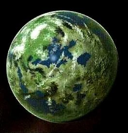

Catachan
| Catachan | |
|---|---|
| Death world of the Ultima Segmentum | |
 Catachan from orbit Artwork © Games Workshop | |
| System | Catachan System |
| Segmentum | Ultima Segmentum |
| Sector | Not recorded in open archives |
| Classification | Death world; jungle world |
| Ruler | Planetary council of the fortress settlements under the Departmento Munitorum[a] |
| Population | c. 12 million (late M41) |
| Climate | Tropical; over 30 °C; global rainforest |
| Tithe grade | Solutio Primus (tithe of soldiers) |
| Known for | The Catachan Jungle Fighters; the Catachan Devil; the most hostile ecosystem settled by humans |
Catachan is a death world of the Ultima Segmentum, covered by a single tropical rainforest whose plants and animals are hostile to all outside life. It is held to be the most dangerous world inhabited by humans in the Imperium of Mankind. Its only export of value is its people, who are recruited in great numbers into the Astra Militarum as the Catachan Jungle Fighters, the Imperium's foremost light infantry for jungle, ambush and survival warfare.[1][2]
The world was settled by accident during the Dark Age of Technology, when colonists crash-landed and could not leave. In the 41st millennium it repulsed a Night Lords invasion in 972.M41, and in the first years of the Era Indomitus its own regiments defeated a daemonic incursion that followed the opening of the Great Rift before the Indomitus Crusade arrived.[3]
History
[edit]Settlement
[edit]Survey probes of the Dark Age showed Catachan from orbit as a calm green world apparently ideal for human life. The first colony ships were forced by an emergency to crash-land in the jungle, probably in the 20th or 21st millennium, and the colonists, unable to leave, held out in their wrecked ships against a jungle that seemed to besiege them.[b] Many died before the survivors learned enough of the planet to live beneath its canopy. Over the following millennia their descendants became a people of great size, strength and endurance.[2]
Recruitment into the Imperium
[edit]In time the Departmento Munitorum, the Imperial Army's logistical and command branch, founded in the early years of the 31st millennium, recognised that men and women who could survive on Catachan would make soldiers for the Imperium's most hostile battlefields, and raised the first regiments of Jungle Fighters.[1][c] Catachan regiments have since served in nearly every major campaign of the Imperium, among them the Macharian Crusade (392–399.M41) and the Tyrannic Wars.[4]
The Defence of Catachan
[edit]In 972.M41 the Chaos Lord Ratathrax of the Night Lords invaded Catachan. Ratathrax bombarded the jungle and the fortress networks from orbit, then landed to watch the slaughter, and was ambushed and throttled by Colonel Iron Hand Straken of the 2nd Catachan regiment, who had waited for him in a toxic bog.[4]
The Great Rift
[edit]Late in 999.M41, during the Thirteenth Black Crusade, Catachan lay in the path of a wounded void whale and of the Ork freebooter Kaptain Badrukk, and the warp storm Bas Infernia prevented the Imperium from warning the planet by astropathic message.[4] When the Great Rift opened soon after, Catachan was struck by a daemonic invasion. When the fleets of Roboute Guilliman's Indomitus Crusade reached the system, c. 000–001.M42, they found that the Catachan regiments had already destroyed the daemons and their cultists. The fleet halted to take on new regiments and left with more troops than it had brought.[3]
Timeline
[edit]| Date | Event |
|---|---|
| c. M20–M21 (estimated) | Colony ships crash-land; settlement begins |
| After the Departmento Munitorum's founding in the early 31st millennium | First Catachan regiments raised |
| 392–399.M41 | Catachan regiments in the Macharian Crusade |
| 972.M41 | Night Lord Ratathrax invades and is killed |
| 999.M41 | Threat of Kaptain Badrukk; Great Rift opens |
| c. 000–001.M42 | Daemonic invasion defeated; Indomitus Crusade recruits on Catachan |
Geography
[edit]Catachan is a hot, humid world, with temperatures above 30 °C, covered from pole to pole by rainforest. Its ecosystem is uniformly predatory: carnivorous plants, poisonous fungi, swarming insects and great beasts all attack humans. The most famous of its animals is the Catachan Devil, a giant many-legged arthropod with a venomous sting, which gives its name to the 2nd Catachan regiment. Other dangers include the Venus mantrap, the barking toad and the Catachan face-eater.[2]
The few settlements are great fortresses surrounded by cleared ground to give fields of fire. Vines and lichen take root in every structure, acidic sap dissolves mortar, and roots crush bunkers, so the buildings must be constantly repaired or rebuilt.[2]
Society
[edit]Every Catachan must survive the jungle to reach adulthood, and the people are, as a result, unusually tall, strong and resourceful, so much so that soldiers of other regiments call them "baby Ogryns", a name used at some risk. They value self-reliance and contempt for danger, and treat rank and ceremony lightly. The Catachan knife, carried by every adult, is a symbol of their culture as much as a tool.[1]
Almost all able adults leave the planet in the regiments, and the world's tithe is paid in soldiers. The Imperial Cult is observed plainly, and Catachan veterans are known for honouring the memory of fallen comrades over formal religious practice.[1]
See also
[edit]
Notes
[edit]- ^ No named planetary governor appears in open records; the Munitorum's regimental recruiters are the main Imperial authority on the planet.
- ^ The date of settlement is not recorded and is estimated from the world's isolation through the Age of Strife.
- ^ The first founding of Catachan regiments is not dated in open records.
References
[edit]- ^ a b c d Frost, Toby. Straken (novel). Black Library, Chs. 4, 12. Lyons, Steve. Death World (novel). Black Library, pp. 71, 94, 136.
- ^ a b c d Codex Adeptus Astartes - Space Marines (8th Edition), pg. 20. Games Workshop. Gathering Storm - Part II - Fracture of Biel-Tan (7th Edition), Chapter 2: Empire of Ash, "Intervox Mechanicus" (Sidebar). Games Workshop.
- ^ a b Codex: Imperial Guard (5th Edition), pp. 27, 64. Games Workshop. Codex: Imperial Guard (5th Edition), pg. 15. Games Workshop.
- ^ a b c Codex: Astra Militarum (6th Edition) (Digital Edition), "Regiments of Distinction - Catachan Jungle Fighters". Games Workshop. Codex: Imperial Guard (3rd Edition, 1st Codex), pg. 28. Games Workshop.